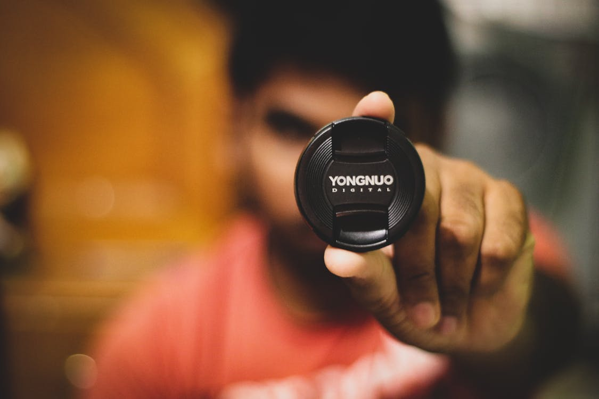
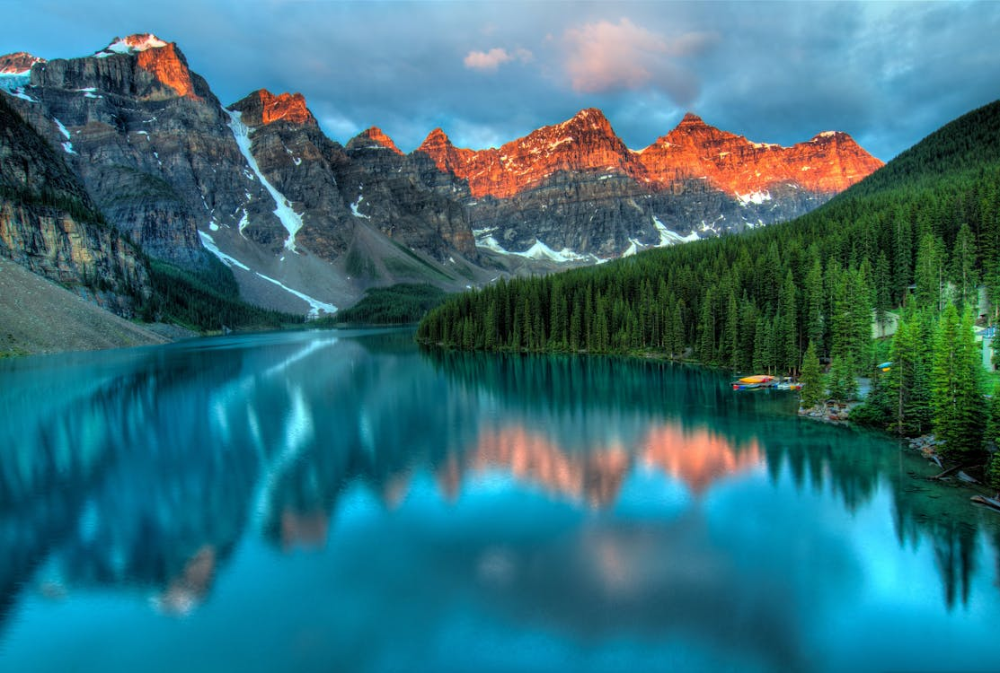
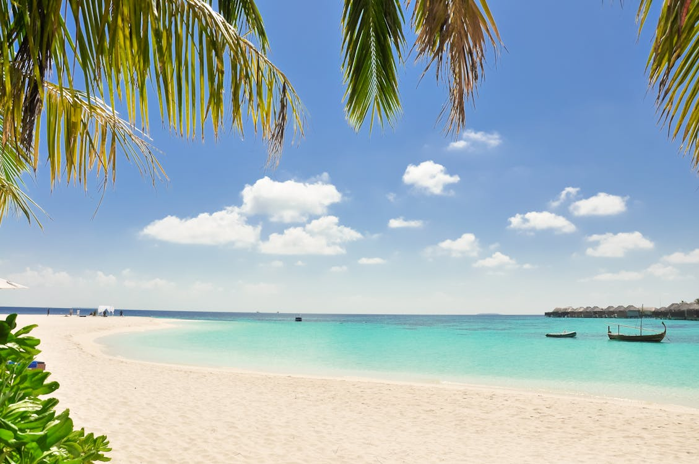
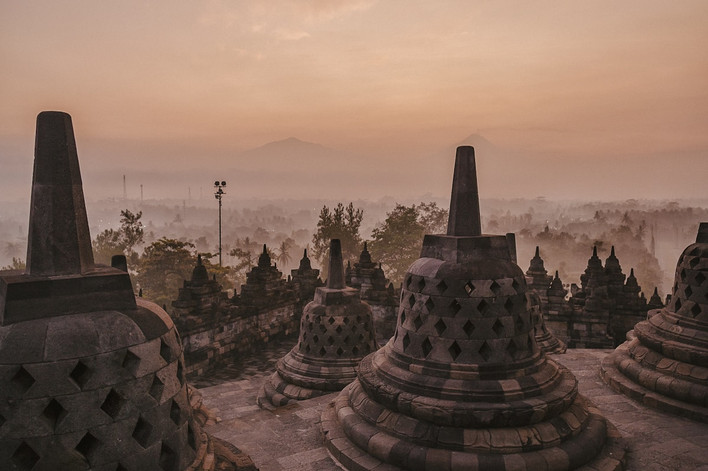
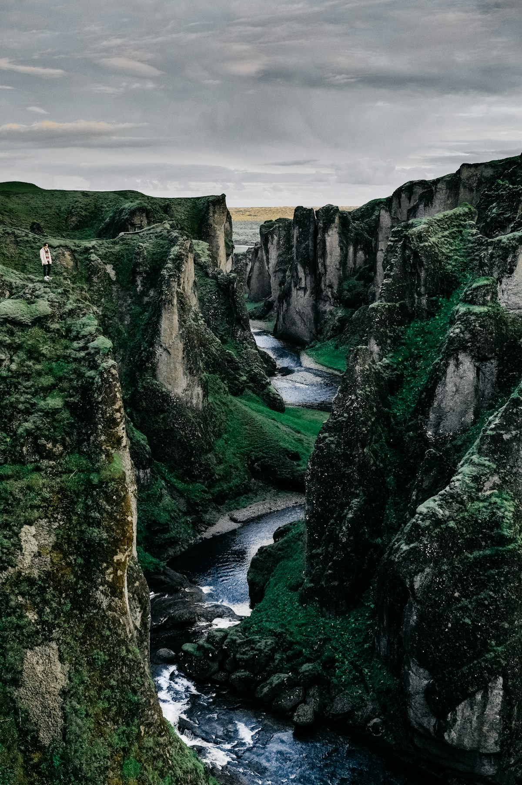
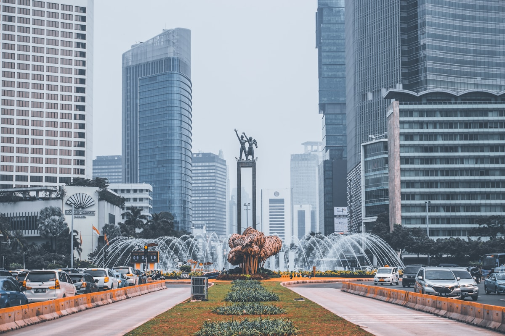

Galeri Destinasi Indonesia
Keindahan alam dan budaya Nusantara yang tak ada habisnya untuk dijelajahi








Lihat kumpulan visual destinasi favorit untuk membantu Anda memilih tujuan wisata berikutnya.
Keindahan alam dan budaya Nusantara yang tak ada habisnya untuk dijelajahi





